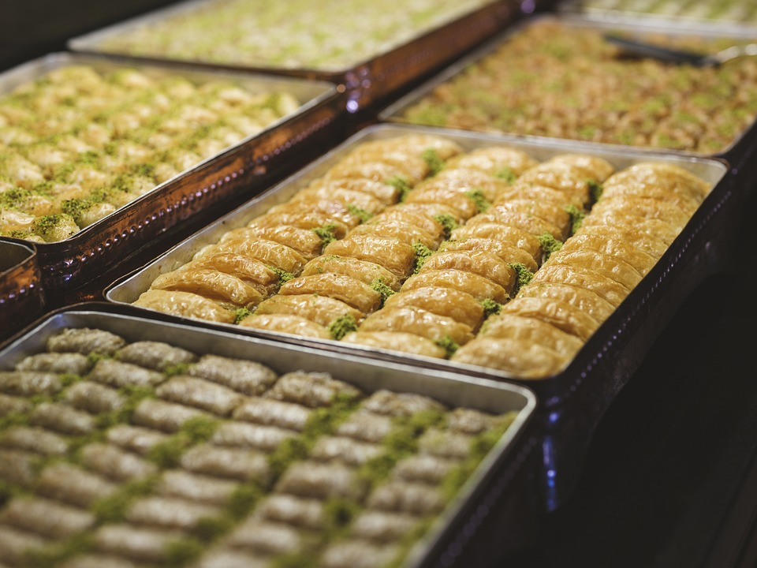
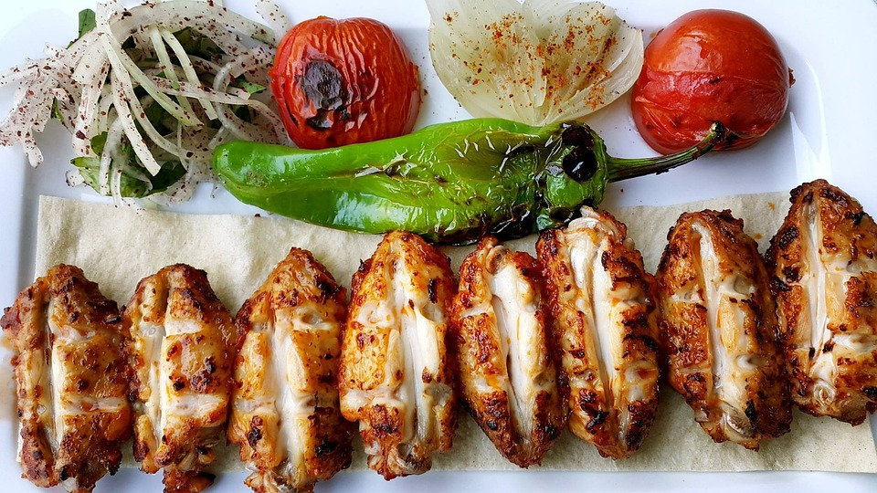
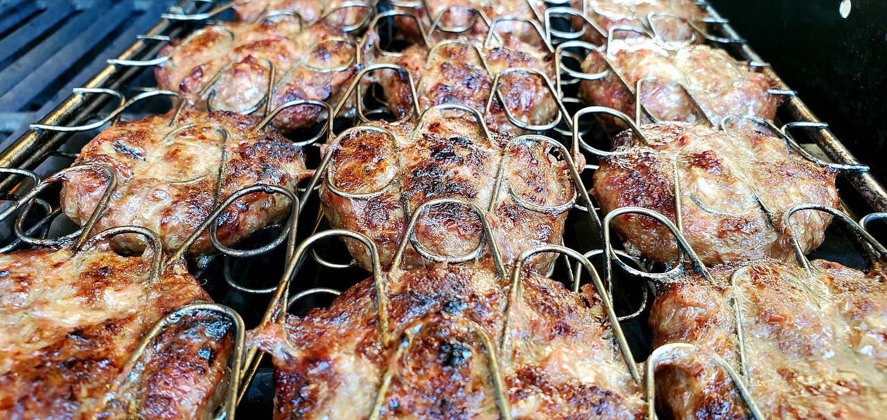

Savoring Turkish Treasures: A Culinary Journey Through Timeless Delicacies!
Baklava

When you go around Turkey, you will surely come across Baklava, one of the country's most well-known and adored desserts. The layers of thin dough, chopped nuts, and sweet syrup that make up this flaky and sweet pastry have won over foodies' hearts and palates all over the world. Come explore the history, technique, and seductive appeal of Baklava with us.
A Brief History
Baklava originated in the ancient Middle Eastern and Mediterranean civilizations, when it was a popular dessert for festivities and special events. Although its precise beginnings are unknown, Baklava is thought to have originated in Ottoman kitchens, where it later on came to represent affluence and richness.
Baklava was accepted and modified to fit regional customs and tastes as it traveled throughout the Ottoman Empire and its surrounding nations. Today, baklava is beloved for its sweet taste, delicate texture, and lengthy history and is consumed in many varieties throughout Turkey, Greece, the Middle East, and beyond.
The Art of Making Baklava
Basic ingredients of Baklava are layers of thin dough (phyllo or yufka), chopped nuts (almonds, walnuts, or pistachios), and a syrup (sugar, water, and lemon juice) for sweetness. Baklava is a simple yet labor-intensive dish. Baklava is all about getting the right combination of flavors and textures—crisp dough layers, crunchy nuts, and sweet, sticky syrup—to create the ultimate dessert.
Baklava is made by brushing phyllo or yufka dough sheets with melted butter, stacking them in a baking dish, and then sprinkling chopped nuts in between the layers. After the layers are put together, the Baklava is sliced into separate portions, frequently forming a square or diamond shape, and baked in the oven until it becomes crispy and golden brown.
As the Baklava bakes, a stovetop syrup consisting of sugar, water, and lemon juice is prepared. The hot Baklava is then put into the syrup right out of the oven. The Baklava gains moisture and sweetness from the hot syrup that is absorbed by the layers of dough, giving the surface a glossy appearance.
Varieties of Baklava
While chopped nuts and sweet syrup are traditional ingredients in the basic Baklava recipe, there are many inventive ways to prepare it. To whet your appetite, try these well-liked varieties:
- Pistachio Baklava: This upscale take on the delicacy consists of layers of phyllo or yufka pastry stuffed with a heaping helping of finely chopped pistachios. The classic recipe is given a wonderful twist by the rich flavor and brilliant green color of the pistachios, which makes it a favorite among nut fans.
- Walnut Baklava: Another delectable version is Walnut Baklava, which has layers of dough with chopped walnuts inside. Walnuts are renowned for their earthy, deep flavor. This delicacy is gratifying and decadent, with the buttery texture of the walnuts contrasting well with the crisp layers of phyllo or yufka pastry.
- Almond Baklava: Known for their delicate texture and mild sweetness, chopped almonds are sandwiched between layers of dough in this original variant. In addition to giving the Baklava a lovely crunch, the almonds' rich, nutty flavor goes well with the sweet syrup.
Savoring the Flavors of Baklava
A trip through Turkish cuisine wouldn't be complete without sampling Baklava's flavors. Enjoyed at a neighborhood cafe, a crowded street food market, or a traditional Turkish bakery, Baklava entices the senses with its rich aroma, delicate texture, and sweet flavor. Baklava is a shared experience that unites people to enjoy delicious cuisine and delightful company, whether they are in the bustling streets of Istanbul or the serene shores of the Mediterranean.
Thus, make sure to indulge your taste buds with Baklava's delectable treats the next time you visit Turkey. Enjoying the traditional recipe or trying creative twists, one thing is for sure: your gastronomic adventure will be nothing short of remarkable.
Savor the sweet treats of Baklava and discover Turkey's extensive culinary history with each mouthwatering bite.
Kebab

When you go on a culinary adventure in Turkey, you will surely come across kebab, one of the country's most well-known and cherished delicacies. Foodies all over the world have been enthralled with this flavorful grilled pork meal because of its soft texture, heady spices, and deep flavors. Come explore the history, preparation, and seductive appeal of kebab.
A Brief History
Kebab originated in the Middle East, where it has been a mainstay of local cuisine for decades. It is thought that the name "kebab" originally came from the Persian word "kabāb," which meaning "grilled meat."
Kebab became a staple of Turkish cuisine after spreading throughout the Middle East and Turkey throughout time. In Turkey nowadays, kebab can be found in a variety of settings, from neighborhood cafes and street food stands to upmarket restaurants and fine dining places.
The Art of Making Kebab
Fundamentally, kebab is a straightforward but delicious dish composed of grilled or skewered meat, usually lamb, beef, or chicken, spiced with a mixture of tasty herbs and spices. Achieving the ideal combination of flavors and textures—tender meat, charred edges, and a smoky aroma—is the secret to a delicious kebab.
Meat chunks are marinated in a concoction of yogurt, olive oil, garlic, onion, and a variety of spices, including sumac, cumin, coriander, and paprika, to make kebab. After that, the meat is skewered and cooked over a hot grill or open flame so that the tastes and juices can deepen and caramelize.
To keep the meat moist and tender while it cooks, a mixture of olive oil and lemon juice is basted over it. When the kebab is done, it's served hot off the grill with typical side dishes including rice, bread, salad, and yogurt sauce.
Varieties of Kebab
Though lamb, beef, or chicken are the usual ingredients in the traditional kebab recipe, there are many other innovative versions to try. To whet your appetite, try these well-liked varieties:
- Adana Kebab: This fiery take on the meal has its origins in the southern Turkish city of Adana. It has minced lamb meat that has been seasoned with garlic, spices, and red pepper flakes. The meat is then shaped into skewers and cooked to perfection over a grill. Adana Kebab is a favorite among spice lovers because of its strong flavors and intense heat.
- Iskender Kebab: Iskender Kebab is a traditional Turkish dish that consists of thinly sliced beef or lamb placed over bread and covered in melted butter and tomato sauce. Yogurt and roasted peppers are frequently added as garnishes, making it a filling and tasty dish that goes well with any meal.
- Shish Kebab: Shish Kebab is a straightforward yet delectable take on the cuisine, consisting of marinated chunks of meat, usually lamb or beef, that are skewered and then expertly cooked. Often combined with veggies like bell peppers, onions, and tomatoes, the meat makes a vibrant, savory dish that's ideal for grilling in the summer.
- Chicken Kebab: Marinated chicken breast or thigh meat that is expertly grilled is the centerpiece of this well-liked dish. A tasty and filling dish that works well for any occasion is made from the combination of herbs and spices that are seasoned into the juicy and tender chicken.
Savoring the Flavors of Kebab
A trip to Turkish cuisine wouldn't be complete without sampling kebab. Enjoyed at a lively street food stall, neighborhood market, or traditional Turkish restaurant, kebab entices the senses with its robust flavors, soft texture, and fragrant spices. Kebab brings people together to share in the delight of delicious cuisine and wonderful company, whether they are on the calm beaches of Antalya or the busy streets of Istanbul.
Thus, make sure to indulge your taste buds with the savory delight of kebab the next time you find yourself in Turkey. Enjoying the traditional recipe or trying creative twists, one thing is for sure: your gastronomic adventure will be nothing short of remarkable.
Savor the deep tastes of kebab and discover Turkey's rich culinary history with each mouthwatering bite.
Kofte

If you take a gastronomic tour of Turkey, you will surely come across kofte, one of the country's most well-known and cherished delicacies. Food lovers all around the world have been enthralled with this savory meatball meal, which is renowned for its rich spices, soft texture, and robust flavors. Come explore the history, preparation, and enticing appeal of kofte.
A Brief History
The Middle East and Central Asia are the birthplaces of kofte, a staple of local cuisine that has been eaten there for generations. It is thought that the word "kofte" itself came from the Persian verb "kūfta," which meaning "to grind" or "to pound."
Kofte made its way into Turkish cuisine after spreading throughout the Ottoman Empire and Turkey throughout time. In Turkey nowadays, kofte is consumed in a variety of settings, from neighborhood cafes and street food stands to upmarket dining venues.
The Art of Making Kofte
In essence, kofte is a straightforward but delectable dish cooked with minced meat—usually lamb, beef, or a mix of the two—seasoned with a mixture of hot spices, herbs, and onions. Achieving the ideal harmony of flavors and textures—tender meat, robust spices, and a wet interior—is the secret to making a delicious kofte.
Kofte is made by grounding or mincing meat and adding finely chopped garlic, onions, and parsley along with spices including sumac, paprika, coriander, and cumin. Depending on the regional variety, the mixture is then formed into small balls or patties and either grilled, fried, or cooked in a savory broth.
The kofte stay juicy and moist on the inside while acquiring a flavorful crust as they cook. When the kofte are cooked to perfection, they are served hot directly from the pan or grill, frequently with traditional side dishes including bread, rice, salad, and yogurt sauce.
Varieties of Kofte
Although lamb or beef is usually used in the traditional kofte recipe, there are many inventive modifications and variations to try. To whet your appetite, try these well-liked varieties:
- Izmir Kofte: Located on Turkey's western coast, the city of Izmir is the birthplace of this regional version of the meal. Simmered in a delicious tomato-based sauce, the minced meat is combined with bread crumbs, eggs, and spices before being formed into little balls. Izmir kofte is a popular among both locals and tourists because of its delicate texture and flavorful richness.
- Adana Kofte: This spicy take on the dish's origins is from the southern Turkish city of Adana. It has minced lamb meat that has been combined with spices, garlic, and red pepper flakes. It is then formed onto skewers and cooked to perfection. Spice lovers especially love Adana Kofte because of its strong flavors and intense heat.
- Tekirdag Kofte: This is a locally made version of the dish that comes from the northwest Turkish city of Tekirdag. It has rice, onions, and spices combined with minced meat, which is then formed into little balls and cooked in a tasty broth. Tekirdag Kofte is a popular comfort food meal because of its flavorful and soft texture.
Savoring the Flavors of Kofte
A trip through Turkish cuisine wouldn't be complete without tasting kofte. Tasted at a neighborhood market, a busy street food stand, or a classic Turkish restaurant, kofte entices the senses with its robust scents, soft texture, and rich flavors. Kofte brings people together to partake in the joy of delicious cuisine and wonderful company, whether they are in the peaceful countryside of Cappadocia or the busy streets of Istanbul.
Thus, make sure to indulge your taste buds in the rich tradition of kofte the next time you're in Turkey. Enjoying the traditional recipe or trying creative twists, one thing is for sure: your gastronomic adventure will be nothing short of remarkable.
Savor the deep tastes of kofte and discover Turkey's rich culinary history with each mouthwatering bite.
Manti
.jpeg)
If you take a gastronomic tour of Turkey, you will surely come across Manti, one of the country's most well-known and adored delicacies. The world's culinary fans have been enthralled with this delicacy of savory dumplings, which is renowned for its tasty filling, tart yogurt sauce, and delicate dough. Come explore the history, preparations, and captivating appeal of Manti.
A Brief History
The origins of manni are said to lie in Central Asia, among the Turkic-speaking populations of the area. It is believed that the Seljuk Turks, who migrated to Anatolia in the eleventh century from Central Asia, brought the dish with them.
Manti developed became a staple of Turkish cuisine over time, according to the local tastes and inclinations. In Turkey nowadays, there are many different ways to enjoy Manti, ranging from local eateries and street food stands to high-end restaurants and fine dining places.
The Art of Making Manti
Manti is essentially a labor-intensive dish comprised of thin dough squares filled with onions and seasoned meat (usually lamb or beef). After being cooked until they are soft, the dumplings are served hot and crowned with a heaping dollop of flavorful yogurt sauce, a drizzle of melted butter, and dried mint and sumac.
The dough is thinly rolled out, cut into small squares, and then filled with a blend of spices, onions, and minced meat to make Manti. The squares are then sealed by squeezing their edges together to form flavor-filled little packets.
After the Manti are put together, they are prepared by boiling them in salted water until they are tender, draining them, and serving them hot with melted butter and yogurt sauce. Melted butter provides richness and depth of flavor, and thick Greek yogurt, garlic, and salt make up the yogurt sauce, which gives the savory dumplings a tangy contrast.
Varieties of Manti
Though yogurt sauce and spicy beef stuffing are the traditional components of the Manti dish, there are many inventive ways to prepare it. To whet your appetite, try these well-liked varieties:
- Kayseri Manti: This meal, which has its origins in the central Turkish city of Kayseri, is a variety served in certain regions. It consists of tiny, bite-sized dumplings stuffed with a blend of onions and seasoned pork, accompanied with yogurt and melted butter and topped with a tomato-based sauce. Kayseri Manti is a favorite among both locals and tourists because of its robust flavors and substantial texture.
- Dolma Manti: A distinctive take on the cuisine, dolma Manti consists of dumplings stuffed with a blend of rice, onions, and spices, covered with a tart tomato sauce, and served with melted butter and yogurt. The vegetarian filling is a popular option for vegetarians and vegans since it gives the traditional recipe a light and refreshing variation.
- Karaman Manti: This dish, which has its origins in the southern Turkish city of Karaman, is another regional variety. It is served with melted butter and dried mint and consists of larger, oval-shaped dumplings filled with a mixture of spicy beef and onions and topped with a garlicky yogurt sauce. Large servings and robust tastes characterize Karaman Manti, which makes for a filling and substantial supper.
Savoring the Flavors of Manti
Turkey's gastronomic adventure wouldn't be complete without tasting Manti's delectable flavors. Tastes great at a busy street food stand, a neighborhood market, or a classic Turkish restaurant, Manti entices the senses with its subtle flavors, delicate texture, and fragrant spices. Manti brings people together to partake in the joy of delicious cuisine and wonderful company, whether they are in the peaceful villages of Cappadocia or the busy streets of Istanbul.
Thus, make sure to indulge your taste buds in the rich tradition of Manti the next time you're in Turkey. Enjoying the traditional recipe or trying creative twists, one thing is for sure: your gastronomic adventure will be nothing short of remarkable.
Savor the savory treats of Manti and discover Turkey's extensive culinary legacy, one mouthwatering morsel at a time.